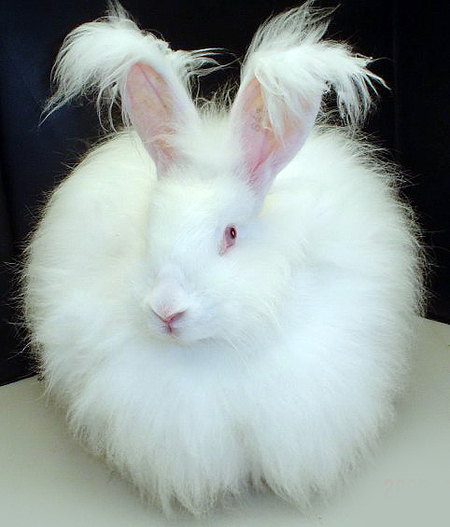

Complete Small Animal Care Guide
Practical support for small-pet care across rabbits, guinea pigs, hamsters, ferrets, hedgehogs, chinchillas, rats, mice, sugar gliders, and gerbils. Use the assistant for diet planning, habitat setup, behavior questions, and exotic-vet decisions.
Last reviewed and updated: March 2026. Small animal care content verified against current AEMV (Association of Exotic Mammal Veterinarians) guidelines and species-specific nutritional research from Oxbow Animal Health and veterinary academic sources.
Why Small Animal Owners Trust Us
Small animals have specialized care requirements that are often misunderstood. Our AI-powered small animal care assistant provides species-specific guidance on housing, diet, enrichment, socialization, and health that helps your pocket pet thrive rather than just survive.
From understanding why your rabbit stopped eating (a potential emergency) to setting up the perfect guinea pig enclosure with a companion, our platform helps you provide the best possible care for your small companion.
We partner with trusted small animal brands like Oxbow and Kaytee, and help you find exotic veterinarians who specialize in small mammal medicine.
Small Animal Breeds & Species Directory
Browse small animal breeds and species, then open any profile for housing, diet, health, and social guidance.
Rabbits
Knowing how this works in a pet context removes a lot of the guesswork from day-to-day decisions. Treat published advice as a framework, then shape it around the particular pet sitting in your home.
Holland Lop
Compact, floppy-eared rabbit. Friendly temperament, 3-4 lbs. Great first rabbit.
Netherland Dwarf
Tiny rabbit breed, 1.5-2.5 lbs. Energetic personality with compact round body.
Lionhead Rabbit
Distinctive wool mane around the head. Friendly, 2.5-3.5 lbs. Requires mane grooming.
Mini Rex
Velvety plush fur, 3-4.5 lbs. Calm and affectionate. Popular show breed.
Flemish Giant
Gentle giant rabbit, 12-14+ lbs. Docile temperament. Needs spacious housing.
American Rabbit
Heritage breed, 9-12 lbs. Calm, docile disposition. Blue or white varieties.
Californian Rabbit
White body with dark points, 8-10.5 lbs. Gentle and good-natured temperament.
Continental Giant
One of the largest rabbit breeds, 16+ lbs. Gentle, intelligent, and social.
Dutch Rabbit
Distinctive two-tone markings, 3.5-5.5 lbs. Friendly and easy to handle.
Dwarf Hotot
White rabbit with black eye bands, 2.5-3.5 lbs. Playful and energetic.
English Angora
Long, silky wool coat requiring daily grooming. 5-7.5 lbs. Gentle personality.
English Lop
Longest ears of any rabbit breed. 9-11+ lbs. Laid-back and affectionate.
French Lop
Large lop-eared rabbit, 10-15 lbs. Sociable and calm. Needs spacious enclosure.
Harlequin Rabbit
Striking color pattern, 6.5-9.5 lbs. Playful, curious, and outgoing personality.
Mini Lop
Compact lop-eared rabbit, 4.5-6.5 lbs. Affectionate and loves attention.
New Zealand White
Large white rabbit, 9-12 lbs. Calm temperament. Common pet and show breed.
Polish Rabbit
Tiny, compact breed, 2.5-3.5 lbs. Energetic with a curious disposition.
Rex Rabbit
Plush velvet-like fur, 7.5-10.5 lbs. Intelligent, maternal, and friendly.
Guinea Pigs
Experienced pet owners consistently report that paying attention to this detail early on prevents larger problems down the road. Start with the fundamentals and refine your approach as you learn your pet's individual preferences and needs.
American Guinea Pig
Short, smooth coat. Friendly and low-maintenance. Most popular guinea pig breed.
Abyssinian Guinea Pig
Distinctive rosette coat pattern. Outgoing personality. Moderate grooming needs.
Peruvian Guinea Pig
Long flowing coat up to 24 inches. Requires daily grooming. Gentle temperament.
Teddy Guinea Pig
Dense, springy coat resembling a teddy bear. Hardy and easy to care for.
Skinny Pig
Nearly hairless guinea pig. Needs warmer environment. Unique and affectionate.
Baldwin Guinea Pig
Completely hairless guinea pig. Born with hair that falls out. Needs extra warmth.
Coronet Guinea Pig
Long-haired with a single rosette crown. Needs regular grooming. Sweet personality.
Silkie Guinea Pig
Long, silky coat that sweeps back. Also called Sheltie. Requires daily grooming.
Texel Guinea Pig
Long, curly coat throughout body. High grooming needs. Gentle and calm.
White Crested Guinea Pig
Short coat with a single white rosette on forehead. Easy to groom. Friendly.
Hamsters
Owners who take time to learn their pet's actual tendencies — not some generic breed summary — tend to build deeper trust with the animal.
Syrian Hamster
The classic golden hamster. Solitary, 5-7 inches. Most popular pet hamster species.
Dwarf Hamster
Tiny hamster species, 2-4 inches. Fast and social. Can sometimes live in pairs.
Campbell's Dwarf Hamster
Social dwarf species, 3-4 inches. Many color varieties. Can be nippy if not handled.
Roborovski Hamster
Smallest and fastest pet hamster. Active and entertaining. Better to observe than handle.
Chinese Hamster
Longer tail, mouse-like appearance. Gentle and rarely bites. Solitary species.
Winter White Hamster
Changes coat color in winter. Social dwarf species, 3-4 inches. Gentle temperament.
Rats & Mice
If you are optimizing a pet's routine, this is one of the higher-leverage items to get right early. Take the time to learn what your individual pet needs — the investment pays off throughout their life.
Fancy Rat
Intelligent and social. Bonds strongly with owners. Needs same-sex companion.
Dumbo Rat
Low-set round ears. Same care as standard rats. Popular for adorable appearance.
Hairless Rat
Completely hairless variety. Needs warmer environment. Prone to skin issues.
Standard Rat
Classic pet rat. Highly trainable, affectionate. Lives 2-3 years. Social species.
Fancy Mouse
Small and active, many color varieties. Females can live in groups. Quick and curious.
Pet Mouse
Compact and entertaining. Easy to care for. Nocturnal and active. Lives 1-3 years.
Ferrets
What sets great pet ownership apart is attention to the specifics — your pet will respond to care that accounts for their unique traits and tendencies.
Ferret
Playful and mischievous. Highly social and curious. Needs supervised free-roam time.
Albino Ferret
White coat with red eyes. Same care as standard ferrets. Sensitive to bright light.
Sable Ferret
Most common ferret color. Dark guard hairs with lighter undercoat. Classic look.
Other Exotic Small Pets
This foundation turns subsequent decisions from guesswork into calibration, which is where better outcomes usually come from
Chinchilla
Ultra-soft dense fur. Long-lived (15-20 years). Needs dust baths and cool temperatures.
Chinchilla (Standard Gray)
The classic gray chinchilla color. Most common and hardy variety.
Chinchilla Color Mutations
White, black velvet, beige, violet, and other color varieties. Same care needs.
African Pygmy Hedgehog
Solitary, nocturnal. Quill-covered insectivore. Needs warm environment (72-80°F).
Sugar Glider
Nocturnal marsupial that glides. Highly social, needs colony. Special diet required.
Gerbil
Active and curious burrowers. Social species, keep in pairs. Low odor and easy care.
Mongolian Gerbil
Most common pet gerbil species. Active during day. Loves to dig and tunnel.
Degu
Highly social rodent from Chile. Diurnal and intelligent. Needs same-species companions.
Flying Squirrel
Nocturnal gliding rodent. Bonds closely with owners. Needs tall enclosure for climbing.
Prairie Dog
Highly social burrowing rodent. Very vocal and affectionate. Needs spacious enclosure.
Small Animal Care Guides
Comprehensive resources for small animal owners at all experience levels. What works for one pet may not work for another, so use this as a framework rather than a rigid prescription. Your veterinarian and experienced pet owners can offer perspective tailored to your situation.
Complete Small Animal Starter Guide
Starter essentials for new small pet owners including housing basics, diet needs, and species selection.
Small Animal Health & Symptom Guide
Recognizing illness signs in small animals, common diseases, and when to see an exotic vet.
Small Animal Housing & Habitat Guide
Setting up proper enclosures, bedding choices, temperature needs, and creating enriching habitats.
Small Animal Nutrition Guide
Species-specific diet guides for rabbits, guinea pigs, hamsters, rats, and other small pets.
Small Animal Species Comparison Guide
Comparing small pet species and their care requirements to find your perfect pocket pet match.
Small Animal Socialization & Handling Guide
Taming, bonding, and safely handling rabbits, guinea pigs, hamsters, and other small pets.
Trusted Small Animal Care Partners
GI Stasis in Rabbits: A Life-Threatening Emergency
Gastrointestinal stasis is the most common and dangerous health issue in pet rabbits. Understanding the signs can save your rabbit's life.
Why Has My Rabbit Stopped Eating?
A rabbit not eating for more than 12 hours is a medical emergency. GI stasis occurs when the digestive system slows or stops completely:
- Insufficient hay/fiber (#1 cause): Rabbits need unlimited timothy hay making up 80%+ of their diet. Without adequate fiber, the gut slows and harmful bacteria overgrow.
- Dental problems: Overgrown molars (spurs) cause pain when eating. Rabbits' teeth grow continuously and need constant wear from hay.
- Stress: New environments, loud noises, loss of a bonded partner, or predator presence can trigger stasis.
- Pain from other sources: Bladder sludge, arthritis, or injury can cause a rabbit to stop eating.
- Intestinal blockage: Hairballs (unlike cats, rabbits cannot vomit) or foreign objects.
Emergency signs: No droppings for 12+ hours, hunched posture, teeth grinding (sign of pain), cold ears, bloated or tight abdomen. Seek exotic vet care immediately.
Guinea Pig Respiratory Infections
Respiratory infections are the most serious common illness in guinea pigs and can become fatal rapidly:
- Symptoms: Sneezing, discharge from nose/eyes, labored breathing, wheezing, crusty nose, lethargy, and loss of appetite.
- Causes: Bacterial infections (Bordetella, Streptococcus), poor ventilation, dusty bedding, drafts, or stress.
- Treatment: Requires veterinary antibiotics. Do NOT use over-the-counter remedies. Guinea pigs decline very quickly once ill.
- Prevention: Avoid cedar/pine shavings (use fleece or paper-based bedding), keep cage clean, provide vitamin C daily, and minimize stress.
Critical: Guinea pigs hide illness well. By the time symptoms are obvious, the infection may be advanced. Any respiratory symptoms warrant same-day vet care.
People Also Ask: Small Animal Care Questions
Food selection and exercise planning both benefit from referencing the breed's origin story — the resulting calibration is more accurate than a generic plan.
What Should I Feed My Rabbit?
A proper rabbit diet is critical for digestive health and longevity:
- 80% unlimited timothy hay: The foundation of a rabbit's diet. Essential for dental wear and gut motility. Orchard grass is a good alternative.
- 10-15% fresh leafy greens: Romaine lettuce, cilantro, parsley, basil, bok choy, and dandelion greens. Avoid iceberg lettuce (no nutritional value).
- 5% plain timothy pellets: About 1/4 cup per 5 lbs of body weight. Avoid muesli-style mixes with colorful pieces and seeds.
- Treats (very limited): Small amounts of fruit (1-2 tablespoons per day). Banana, apple, blueberries, strawberries.
Young rabbits (under 7 months): Can have alfalfa hay and alfalfa pellets for extra calcium during growth. Transition to timothy hay around 7 months.
Can Guinea Pigs Live Alone?
Guinea pigs are highly social herd animals and should ideally live with at least one companion:
- Same-sex pairs recommended: Two females (sows) are usually the easiest pairing. Two males (boars) can work if bonded properly.
- Signs of loneliness: Depression, hiding, loss of appetite, excessive sleeping, and barbering (chewing own fur).
- Introduction process: Introduce on neutral territory, expect some dominance behaviors (rumblestrutting, mounting), and provide multiple food/water sources.
- Space needs for pairs: Minimum 10.5 square feet (2x4 C&C cage) for two guinea pigs. Bigger is always better.
How Big of a Cage Does My Hamster Need?
Most commercial hamster cages are far too small. Proper sizing prevents stress-related behaviors:
- Minimum floor space: 450 square inches unbroken (30 x 15 inches). 600+ square inches is recommended.
- Best options: Bin cages (DIY from large storage bins), Niteangel cages, Ikea Detolf (turned on its side), or large aquariums (40-gallon breeder minimum).
- Avoid: Wire-bar cages (bar chewing causes dental damage), colorful plastic tube cages (too small, poor ventilation), and mesh wheels (cause bumblefoot).
- Bedding depth: At least 6 inches of paper-based or aspen bedding for burrowing. Avoid cedar and pine (toxic oils).
- Wheel size: 8+ inches for dwarf hamsters, 10-12 inches for Syrian hamsters. The back should not arch while running.
Do Ferrets Smell Bad?
Ferrets have a natural musky scent, but proper care makes it very manageable:
- Main odor source: Skin oils, not anal glands. Descenting only removes emergency spray, not daily odor.
- Clean cage daily: Litter box and food bowls cleaned daily, full cage clean weekly.
- Wash bedding weekly: Ferrets sleep in their bedding, which absorbs oils and odor.
- Feed high-quality food: Poor diet dramatically worsens ferret odor. Feed high-protein, grain-free ferret or kitten food.
- Do NOT over-bathe: Bathing more than once a month strips skin oils, causing overproduction and worse smell.
Why Is My Hedgehog Losing Quills?
Quill loss can be normal or a sign of serious health issues:
- Quilling (normal): Young hedgehogs (6-12 weeks and again around 4-6 months) shed baby quills and grow adult quills. Temporary and normal.
- Mites (very common): Causes flaky, crusty skin with patchy quill loss. Treated with Revolution (selamectin) from a vet. Do NOT use over-the-counter mite treatments for other animals.
- Fungal infection (ringworm): Causes crusty, scabby skin with quill loss. Requires antifungal treatment from a vet.
- Dry skin: Low humidity or improper bedding can cause quill loss. Occasional oatmeal foot baths can help.
- Wobbly Hedgehog Syndrome (WHS): Progressive neurological disease causing quill loss, wobbling, and paralysis. No cure, but manageable in early stages.
Temperature is critical: Keep African pygmy hedgehogs at 72-80°F. Below 68°F triggers a dangerous hibernation attempt that can be fatal for pet hedgehogs.
How Long Do Chinchillas Live?
Chinchillas are one of the longest-lived pet rodents:
- Average lifespan: 15-20 years with proper care. Some chinchillas have lived past 20 years.
- Temperature sensitivity: Must be kept below 75°F. Heat stroke is a serious risk above 80°F. They cannot sweat.
- Dust baths required: Chinchillas need dust baths (not water baths) 2-3 times per week using chinchilla-specific dust to maintain their dense fur.
- Diet: Unlimited timothy hay, limited chinchilla pellets, and very limited treats (dried rosehips, a single raisin occasionally). No fresh fruits or vegetables (too sugary, causes bloat).
- Commitment: A chinchilla is a 15-20 year commitment. Consider this seriously before adopting.
Common Small Animal Care Topics
Our AI assistant can help with these frequently asked small animal care questions:
- My rabbit stopped eating — is this an emergency?
- What size cage does my guinea pig need?
- How do I tame my hamster so it doesn't bite?
- My ferret is losing hair — what could be wrong?
- Can I keep two male guinea pigs together?
- What temperature does my chinchilla need?
- My hedgehog is trying to hibernate — how do I help?
- How do I find an exotic vet for small animals?
Small Animal Emergency Warning Signs
Seek immediate exotic veterinary care if your small animal shows:
- Not eating for 12+ hours (especially rabbits and guinea pigs)
- Labored breathing, wheezing, or open-mouth breathing
- Head tilt or loss of balance (may indicate ear infection or E. cuniculi)
- Bloated or tight abdomen
- No droppings for 12+ hours
- Seizures or tremors
- Blood in urine or stool
- Sudden paralysis or inability to move hind legs
- Fly strike (maggots on rabbit — life-threatening emergency)
Note: Small animals hide illness instinctively. By the time symptoms are visible, the condition is often advanced. Early veterinary care dramatically improves outcomes.
You Might Also Like
A few months of real ownership will clarify which items here matter most for your specific household and which are largely ornamental.
Small Animal Species A-Z
Complete small pet directory with care information
Cost Calculator
Estimate annual small animal ownership costs
Reptile Care Guide
Practical help for reptile owners
Bird Care Guide
Practical help for bird owners
Dog Care Guide
Practical help for dog owners
Cat Care Guide
Practical help for cat owners
Pet Adoption Guide
Finding and adopting the right pet
New Pet Checklist
New-pet setup checklist
Invertebrate & Exotic Pet Care Guides
Comprehensive care guides for popular invertebrate and exotic pets. What works for one pet may not work for another, so use this as a framework rather than a rigid prescription. Your veterinarian and experienced pet owners can offer perspective tailored to your situation.
Hermit Crab Care Guide
Complete hermit crab care including habitat setup, humidity, diet, shell selection, and molting.
Isopod Care Guide
Keeping isopods as pets including species selection, substrate, humidity, and colony maintenance.
Praying Mantis Care Guide
Praying mantis husbandry including enclosure setup, feeding, molting, and species recommendations.
Millipede Care Guide
Giant millipede care including substrate, diet, humidity requirements, and handling tips.
Pet Snail Care Guide
Keeping pet snails including habitat setup, diet, calcium supplementation, and species options.
Stick Insect Care Guide
Stick insect husbandry including enclosure, diet, humidity, and beginner-friendly species.
Tarantula Care Guide
Pet tarantula care including enclosure setup, feeding, molting, and beginner species recommendations.
Scorpion Care Guide
Pet scorpion husbandry including enclosure, heating, feeding, and safe species for beginners.
Disclaimer
The information provided is educational and does not replace professional veterinary care. Always consult with a licensed veterinarian for diagnosis and treatment of your small animal's health conditions. In emergencies, contact your local emergency veterinary clinic immediately.